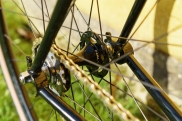

March 2, 2025
The Pure Joy of Fixed Gear Riding

The Beginning
When I first locked into a fixed gear drivetrain eight years ago, the city transformed. No distractions - just the rhythmic push and pull of pedals connecting me to every crack and contour of pavement. That first brakeless descent down Market Street remains burned in my muscle memory, a baptism by velocity.
The 2025 Community
Our Thursday Night Lights rides now draw over 200 riders weekly. The scene has evolved from rebellious messengers to include doctors, artists, and even city planners collaborating on urban cycling initiatives. The common thread? That addictive direct-drive connection no e-bike can replicate.
The Modern Philosophy
In an age of digital overload, fixed gear riding demands presence. New 2025 gear like graphene-infused chains and ceramic bearings enhance the experience, but the core remains unchanged: one gear, no shortcuts, total immersion. It's meditation in motion for the urban environment.
The Future
With fixed gear Olympics demonstrations planned for LA 2028, what was once an underground movement is gaining recognition. Yet the soul remains - raw, unfiltered, and gloriously analog in a digital world.